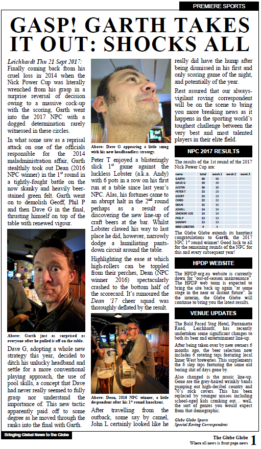
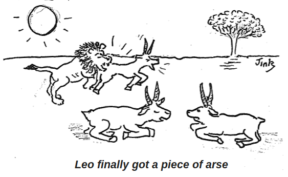
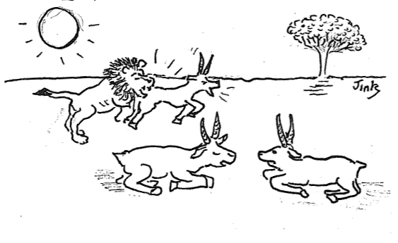
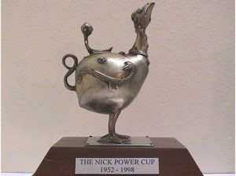

Glebe Globe – Garth Takes It Out
Glebe Globe – Garth Takes It Out
| name | week 1 | Week 2 | Week 3 | total |
|---|---|---|---|---|
| GARTH | 40 | 40 | ||
| DAVE G | 39 | 39 | ||
| JUSTIN | 30 | 30 | ||
| PETER T | 23 | 23 | ||
| GEOFF | 23 | 23 | ||
| CHRIS | 22 | 22 | ||
| DEAN | 15 | 15 | ||
| JOHN L | 14 | 14 | ||
| SMOKIN’ JOE | 14 | 14 | ||
| PHIL P | 13 | 13 | ||
| SAMMY | 13 | 13 | ||
| BIRD LOBSTER | 9 | 9 |
Our judges Bo and Gay write, “Bo and I have finally, after due consideration of all entries (and NO bribes), made our final decision in the High Jinx Caption Comp. AND, the winner is…Ms Stella”
Congratulations to Stella for the winning entry. Thanks to the judges, all the great entries (which are definitely worth another look) and of course the cartoonist himself!
Everyone was a winner at last night’s first Non-NPC HPDP Pool Comp Post-NPC Final (N-NHPCP-NF) 2011. Although the turnout post-“that other cup-fever event” was sadly far from the recent sellout NPC 32-player comps, the still-lively and enthusiastic banter was accompanied by the ching-ching of additional points being racked up by all who deigned it important to be there on the night.
Several theories as to why last night’s disappointing 8-player comp came to be were postulated including that people were recovering physically and/or financially from the excesses of “that other” cup day. Others suggested NPC burnout and stress-therapy schedule conflicts. Some unconfirmed reports attributed this condition to Dave G who is perhaps suffering from an acute bout of Blankie-Withdrawal Syndrome (BWS).
The night started with some concern as the presence of just one pool table (owing to the current Toccie renovations) may have potentially thwarted plans of being able to hold another 32-player comp. Ironically, it was the thoughtfulness of others for not turning up which was then appreciatively voiced by those present.
In what appeared to be a live demonstration that it wasn’t just the NPC recently inspiring him, Peter T went on to fight off some tough opposition with relative newcomer Lyndon and then not-too-regular-but-becoming-
Perhaps reflecting a mirror image of that, John L‘s unfortunate loss in the 1st round against cool-headed opponent Liz saw him not only take early retirement but also an early return to the pavilion. The 2 bonus points he still collected for simply participating (note to all) brought his annual total exactly to the century mark. This was possibly some form of subtle spiritual wake-up call to John that he does indeed need to catch up with the 21st century. Dean‘s extra 8 points on the night saw a rejiggidy of 3rd and 4th places between himself (122) and Lee (120.5) who crashed and burned in the 1st round, possibly also a victim of post-NPC stress trauma.
Full results as always at: http://stats.hpdp.org.au
Other Updates
John L was also sadly missed at the traditional
after-party which proved to be a veritable ocean-sized pool of creative
talent encouraged and spurred on by the boundless wit and slap-stick
comedy of that master and mentor of cartoonery and tomfoolery, the JinkMeister himself. A flurry of posts to Jink’s caption guessing competition was made on the night putting the total number of contending captions by the end of the day to an impressive 15. John L,
always an early-mover (although sometimes possibly too quick to be off
the mark) on creative challenges such as these, put in an early rather
left-field pitch in the morning. He then continued to confound readers
when he admitted later that night to several incredulous faces that no
illicit substances had been used in the formulation of his contribution
(possibly referring to them not being required*).
* citation needed
On administrative matters, discussion was initiated by the ChuckleMeister at the after-bash about the impartiality of the judging particularly as the MeisterScheisseter himself wished to take the opportunity to improve upon his own, yet to be disclosed, original caption. Following this lively discussion, it was subsequently agreed by the quorum present that:
* Tentatively named: High Jinx Cartoon Caption Guessing Competition Independent Impartial Judging Panel (HJCCGCIIJP)
Secret Caption Top-Secret Hiding Place
Some suggestions for panel members were made and these will be followed up and their availability reported on here. Any other suggestions for independent, impartial judges should be sent to the HPDP mailing list.
Signing off till next time.
Peter T
Greetings to all & felicitations again to all Nick Power Cup 2011 Attendees!!
Now that the other ‘cup fever’ is out of the way, here is the final update for the Nick Power Cup 2011…
Last Wednesday night’s final of the Nick Power Cup 2011 proved to be another nail-biting last-minute scramble for dominance as the honour was fought out valiantly by the top dozen or so contenders starting out on the night.
As with all NPC nights, the crowds swelled and the usual jostle between players, camerapersons, enthusiastic onlookers and disgruntled losers took place. The place was abuzz with excited chatter amongst the hyped-up players, supporters, usual rowdy mob of hecklers and the infamous and much-admired Two Guys in the Balcony providing their now-legendary witty and gay reparteé as they diligently reported the unfolding fate of the dwindling cast of pool stars still in with a chance of glory.
The usual band of colourful characters were out in force: Dave G with his Linus-like NPC red sweat band looking as though Sunday tennis and cucumber sandwiches was more his cup of tea, although that night was looking like he had the fire in his belly to take out the honours; Roelof sitting ruefully as his chances for the NPC looked extremely dire; forever-lovable and cuddly John L reluctantly accepting that his chances were also very slim; and, of course, the father and son team in the commentary balcony, Jink and Jink Jnr, providing their highly-authoritative shot-by-shot account of proceedings and the fine intricacies of the game.
Lee, then wearing the yellow stage-leader jersey, started the night with a solid 47 points and had an easy win in the 1st round. This immediately knocked out many of the lower-end contenders including Roelof (14), Aidan (12), Dan T (12) and Henare (9). Unfortunately, for Justin (37) and Dean (29) they managed to do this to themselves in disappointing and career-limiting 1st round losses. Lee went on to beat already-eliminated Roelof in the 2nd round. Meanwhile, Peter T was also inflicting some damage by eliminating well-placed contender Phil P (29) in the 2nd round, then going on to pants-down Y-Fronts in the 3rd round… no, seriously, his name was Y-Fronts… check the draw!
Going into the 3rd round, Peter T‘s only hope now was that Lee was defeated and sunk less than 4 balls. However, Lee, with gritty determination, managed to secure a win against potential spoiler, John L, thus cementing his clutch on the coveted trophy. Henare also made a late bid for grabbing at least some of the glory and went into the semis only to eventually also fall to the mighty Lee juggernaut.
Peter T, although realising he had made his dash for the finishing line perhaps a week late, was not going to let Lee take out all of the honours on the night and went into the finals cranking the pace up one more notch. His solid finish against Lee gave him the top honours on the night but his overall NPC 2nd-place score of 67 was still woefully short of Lee‘s impressive 82 points.
On behalf of all HPDPers and especially those who proudly participate in this most prestigious of sporting spectacles, many congratulations to:
Lee, the winner and holder of the Nick Power Cup 2011.
Lee was presented with the cup at the traditional presentation ceremony held at the local Level One
venue after the completion of the pool comp. The wild reveling
continued into the wee hours as per usual with a higher-than-normal
level of casualties reported the next day.
The following table shows the final results for the top 20 scoring
players for the Nick Power Cup 2011. All results can be found here.
| rank | name | points | week 1 | week 2 | week 3 |
| 1 | LEE | 82 | 32 | 15 | 35 |
| 2 | PETER T | 67 | 21 | 6 | 40 |
| 3 | DAVE G | 56 | 13 | 31 | 12 |
| 4 | PHIL P | 43 | 7 | 22 | 14 |
| 5 | OZZIE | 41 | 29 | 12 | – |
| 6 | DANIEL | 40 | – | 40 | – |
| 7 | JUSTIN | 39 | 14 | 23 | 2 |
| 8 | HENARE | 37 | 7 | 2 | 28 |
| 9 | KEVIN | 36 | – | 36 | – |
| 10 | DEAN | 35 | 15 | 14 | 6 |
| 11 | DAN T | 32 | 5 | 7 | 20 |
| 12 | JL | 29 | – | 7 | 22 |
| 12 | DAVE H | 29 | 6 | – | 23 |
| 14 | ROELOF | 28 | 7 | 7 | 14 |
| 15 | DAVE T | 26 | 20 | 6 | – |
| 16 | ALLAN | 23 | – | 23 | – |
| 17 | BARRY | 19 | – | 13 | 6 |
| 18 | AIDAN | 18 | 4 | 8 | 6 |
| 19 | Y-FRONTS | 16 | – | – | 16 |
| 20 | JIM | 14 | – | – | 14 |
| 20 | SHAYAN | 14 | – | 14 | – |
NPC 2011 Final Results: http://stats.hpdp.org.au/
HPDP 2011 Pool Comp Update:
Roelof (191.5 pts) still maintains his lead despite
having a bout of off-form nights over the past few weeks. This may also
be partly due to the increased level of competition that the NPC fires
up in the hearts of players young and old. His lead over 2nd
place-getter, Peter T, has narrowed from an impressive 52 points (Week 36 – 21/9/11) to just 21 points. With just weeks to go, will Roelof be able to maintain the lead he has held since he snatched it from Peter T in Week 30 (10/8/11)? Will the 3rd and 4th place-getters, Lee (118.5) and Dean (114) be able to bridge the ever-widening gap to the lead, particularly after Lee’s spectacular NPC performance?
2011 Comp Ladder : http://stats.hpdp.org.au
Filming and commentary of the NPC 2011 was continued last Wednesday and is now in the capable hands of master filmmaker and Herr Direktor, John L, to bestow his boundless critique and editing skills upon what I am sure will be yet another fine display of audio-visually-magical trickery and craftsmanship. Keep an eye on the HPDP website to catch the final edited versions!
Community Announcement:
In response to certain complaints and queries in regards to unavoidable
production delays in announcing these results, HPDP community members
should be reminded that the very best way to ensure that you have
instantaneous live updates for NPC or normal HPDP comps is to actually attend these events on the night!!
This will not only provide immediate results, analysis and critique,
but will also involve you in the spirit of fun competition these
auspicious occasions always foster. The next best way is to check the
results on the HPDP stats website. The final results for the NPC 2011 were posted on there within minutes of the comp finishing last Wednesday night.
All the very best for the rest of this very exciting year and good luck with your training and preparations for the Nick Power Cup 2012.
Peter T
Update: The winner has been announced!
Here’s the latest High Jinx gag but this time there’s a difference… there’s no caption.
That’s where you come in.
This morning the cartoonist had a silly thought – instead of using his idea for a caption, why not put it out to the ever creative HPDP community?
So here’s the deal, leave a comment with your suggested caption and next Wednesday the 9th of November the winner, as judged by the artist, will be announced (so you better get along to to the comp!). The winner will have their caption digitally etched into the cartoon and it will be posted here on the HPDP site.
Last night saw the first night of the most-anticipated and revered sports event in our entire planetary system plus a bit past Alpha Centauri, around the corner and take the first laneway on the left, the Nick Power Cup (2011).
As usual, the event was surrounded by the usual awe, glamour and glitz as the stars of the pool industry were out in force to show their support and take a crack at winning this most-coveted of prizes. The HPDP film crew were enthusiastically buzzing and swarming to capture the play and gain exclusive interviews with celebrity players whilst the huge and ever-growing, eager audience waited impatiently for the show to begin.
And what a night of pool it was although with some early shock disappointments and clear displays of match nerves. Proving that the mystical fire and passion the NPC brings out are truly powerful forces not to be easily dismissed, current 2011 champ, Roelof, succumbed in the first round securing a mere 7 points out of the maximum 32 on offer (16-player comp). Peter T, currently second placed on the 2011 ladder, fared better by going on to the semis and claiming a solid 21 points towards his aim of having his name etched for the 4th time on this most-adulated of trophies. NPC newcomer, Ozzie, managed to secure 2nd spot with 29 balls sunk on the night. A disappointing 1st-round loss was also experienced by the NPC 2010 dark horse 2nd place-getter, Henare (7pts).
Full marks (32) go to Lee, who shone through to take out the night and put himself firmly at the top of the NPC 2011 ladder. Lee’s form has been sporadic over the years, this being best highlighted when comparing last night’s result to his last year’s NPC placing of 23rd equal (13pts total). Excellent work, Lee. I would like to personally nominate you for Most Improved Player 2011 – NPC Category.
In the ongoing 2011 pool comp standings, current leader, Roelof (190pts) added just a single point to his total last night whilst 2nd place-getter, Peter T (154pts), further whittled away Roelof’s lead by another 3 points. Highlighting the critical importance of attendance in actually gaining any points, the absence of John L (96pts) last night meant that Lee (109.5pts) was able to steal John’s undefended 4th place whilst also closing in rapidly on Dean (113pts) in 3rd. This year’s countdown to the grand final appears set to being a nail-biting photo-finish once again.
The table below shows all the current standings in the NPC 2011 ladder. With two more weeks of jockeying for top position to go, anything is possible.
| rank | name | points | week 1 |
| 1 | LEE | 32 | 32 |
| 2 | OZZIE | 29 | 29 |
| 3 | PETER T | 21 | 21 |
| 4 | DAVE T | 20 | 20 |
| 5 | DEAN | 15 | 15 |
| 6 | JUSTIN | 14 | 14 |
| 7 | DAVE G | 13 | 13 |
| 8 | GAVIN | 7 | 7 |
| 8 | ROELOF | 7 | 7 |
| 8 | PHIL P | 7 | 7 |
| 8 | HENARE | 7 | 7 |
| 12 | DAVE H | 6 | 6 |
| 13 | DAN T | 5 | 5 |
| 14 | AIDAN | 4 | 4 |
NPC 2011 Results: http://stats.hpdp.org.au/
2011 Comp Ladder : http://stats.hpdp.org.au
On a related topic, as you will no doubt be aware, the NPC is currently being filmed by the HPDP film crew (Chick Stick Productions) for eternal safe-keeping of memories. Edited scenes will be made available on the HPDP website once Herr Direktor, John L, has applied his incredible talents and magical mystical trickery to the editing process. This leads into the next point which alludes to the requirement for “absolute bucketloads of that magic” to be applied…
Any general queries in regards to this footage (particularly that on the night of Wed 12 Oct 2011) or any issues arising from any mishaps and/or technical problems that may have been encountered, should be directed to the “nominated” (following a unanimous retrospective vote-of-confidence in his abilities on the night) temporary director, –>> Jink <<–. All liability for any of these aforementioned complete and utter f*ups has been absolved on all other involved, irresponsible parties. Good luck, Jink!! We’re right behind you (at a very safe distance!!)… on behalf of all those other irresponsible parties.
May the chick-stick (a.k.a. girlie-stick, seafood-extender) never be with you!!
[Apologies to all females (including those who should be), feminists,
wowsers and big girls’ blouse users of chick sticks for what is clearly a
highly sexist but humourous reference to a well-established industry
standard measurement of one’s pool ‘girliness’ [Apologies: refer to
disclaimer for ‘chick-stick’]]
Peter T
NOTE: Following a query last night, it should be pointed out that NPC points are NOT awarded for buyback games i.e. only your first attempt ball count will be included.
NOTE: Don’t forget to regularly check for updates on here for always-enlightening news, current events, video clips and rib-shattering humour at its very very best!!
First week played Wed 12th October. Week 2 & 3: 19th and 26th October.
See post below for Week 1 results and commentary. For just results, click here… Continue reading